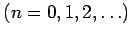
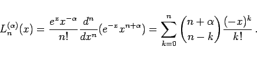
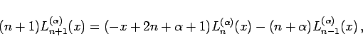
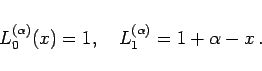
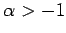
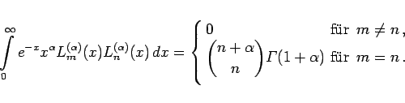
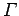

Inhalt Index DeskTop Bronstein

 Differentialgleichungen Gewöhnliche Differentialgleichungen Differentialgleichungen höherer Ordnung und Systeme von Differentialgleichungen Lineare Differentialgleichungen 2. Ordnung
Differentialgleichungen Gewöhnliche Differentialgleichungen Differentialgleichungen höherer Ordnung und Systeme von Differentialgleichungen Lineare Differentialgleichungen 2. Ordnung


Bei Beschränkung auf ganzzahlige Parameter  und reelle Veränderliche hat die LAGUERREsche Differentialgleichung die Form
 |
(9.62a) |
Als partikuläre Lösungen ergeben sich die LAGUERREschen Polynome
|  | (9.62b) |
Die Rekursionsformel für  lautet:
lautet:
|  | (9.62c) |
|  | (9.62d) |
Als Orthogonalitätsrelation gilt für :
|  | (9.62e) |
Mit  ist die Gammafunktion bezeichnet. Zur Orthogonalität s. auch Orthogonale Systeme.